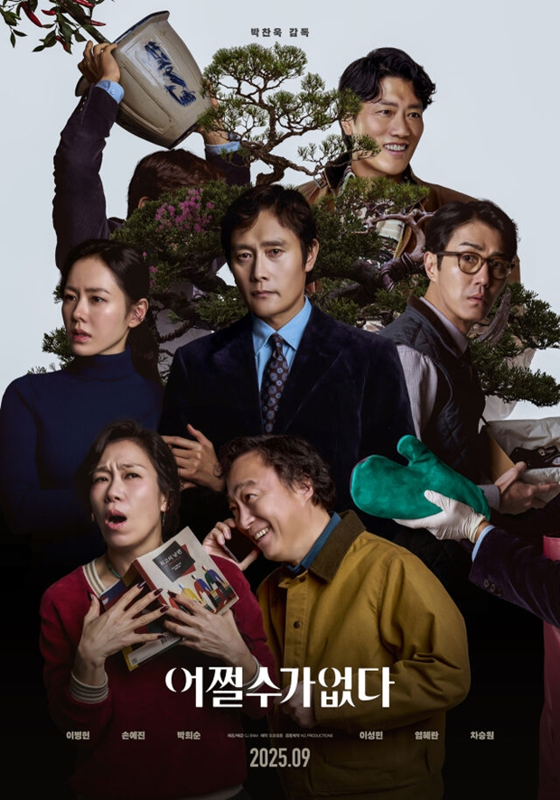
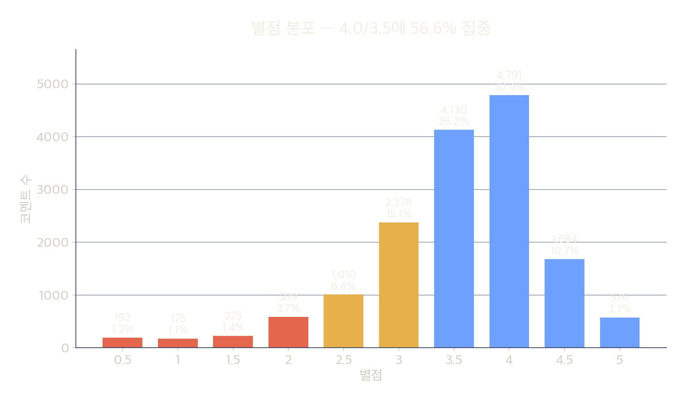
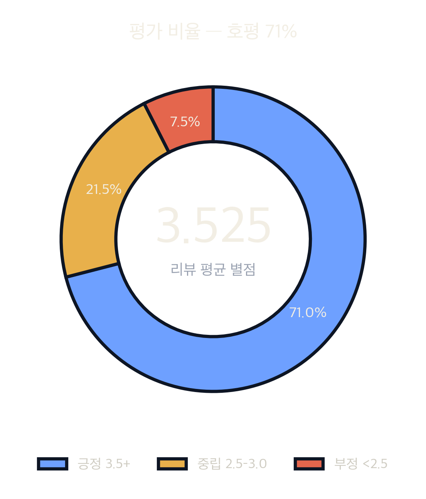
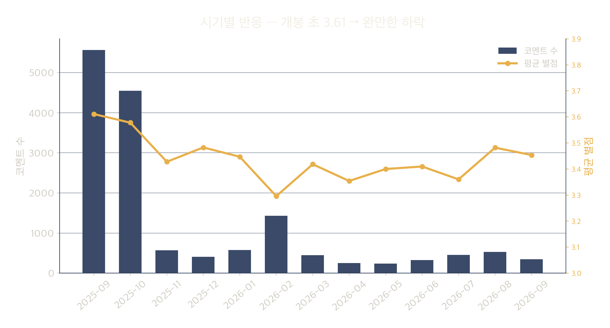
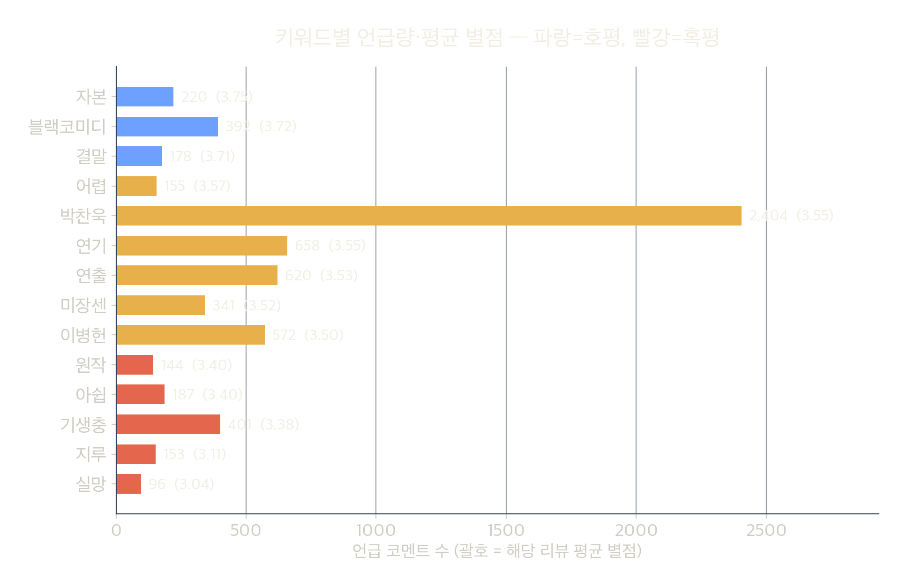
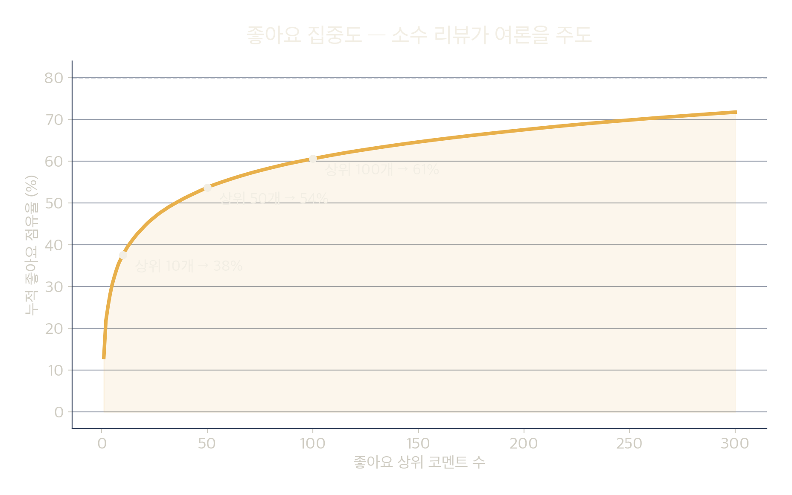

박찬욱 감독, 2025.
왓챠피디아 코멘트 15,824건으로 본 호평과 혹평의 갈림길.
한 편의 영화를 데이터로 다시 봅니다.
작품 정보와 감독,
그리고 분석 대상.
15,824건의 코멘트를
어떻게 모았나.
별점 분포, 추이,
키워드, 집중도.
무엇이 갈리고,
무엇이 남는가.

좋아요 순 전체 15,824건 수집(중복 0).
별점 입력 15,750건, 미입력 74건.
별점 분포·긍부정·시기별 추이·
키워드 빈도·좋아요 상위 리뷰.
자발적 텍스트 리뷰 표본.
전체 별점(약 13.4만 건, 평균 3.5)과 다름.
개봉 직후인 2025-09·10에
전체 코멘트의 약 64%가 집중됩니다.
호평 우위(약 7할)이지만,
소수의 강한 비판이 공존하는 고평균·고분산 작품.
4.0(30.4%)과 3.5(26.2%)가
전체의 56.6%. 최빈값은 4.0.


부정 1,181건은 단순 불호가 아니라
논리적 비판이 많아 영향력이 큽니다.

개봉 초 3.61 → 이후 3.3~3.5로 완만히 하락.
팬덤 호평이 일반 관객 유입과 함께 조정되는 궤적.
키워드의 평균 별점이
곧 만족도의 분기점입니다.


상위 10개 리뷰가 전체 좋아요의
37.5%를 독식(총 42,818).
“정밀하면서 기개와 투지가 어우러지는 연출”(♥770).
무거운 주제를 웃음으로 포장. “웃어야 할지 울어야 할지.”
이성민·차승원·박희순 = ‘주인공 내면의 표상’.
AI·자동화로 흔들리는 노동. “어쩔 수가 없죠”(♥450).
“마지막 첼로 소리는 극한의 희망”(5.0). 결말 평균 3.71.
언급 842회, 평균 3.55. 앙상블에 대한 찬사.
“이 정도 해고에 연쇄살인까지?” 개연성 부족.
전작의 계급 균열 대신 중산층 가장의 위기(♥1007).
중산층 라이프스타일과 살인 서사의 괴리.
“가족애? 실업? 환경? 다 어정쩡하다”(♥622).
인물·동기·행동이 만화적·상징적이라 거리감.
‘지루’ 언급 리뷰 평균 3.11. 알레고리 진입장벽.
| 쟁점 | 호평 진영 | 혹평 진영 |
|---|---|---|
| 알레고리 | 인물=내면의 분신, 다층적 상징 | 동기 빈약을 가린다 |
| ‘기생충’ 비교 | 박찬욱식 계급 풍자의 진화 | 이미 본 서사 |
| 블랙코미디 톤 | 주제를 견디게 하는 장치 | 톤과 주제의 괴리 |
| 결말 | 여운·해석의 여지 | 의도 과잉·난해 |
| 중산층 설정 | 자본주의 보편 서사 | 계급성 흐림 |
〈기생충〉(495회)·〈헤어질 결심〉(278회)과 비교되며
박찬욱 필모의 연장선에서 논해집니다.
“이성민·차승원·박희순은 주인공 내면의 표상…
스스로를 악인이라 생각하는 사람은 없다.”
“죄를 차곡차곡 묻다 보면 나무가 자라날 거예요…
어쩔수가 없잖아요?”
“왜 이렇게 기분이 나쁠까…
‘계급 없는 계급 영화’라는 점.”
“주인공 행위에 대한 강력한 동기를
설득시키는 게 기초인데 그걸 간과했다.”
데이터는 결론을 대신하지 않습니다.
다만 어디서 갈리는지는 보여줍니다.